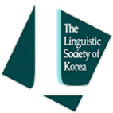
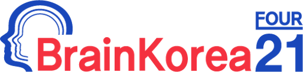
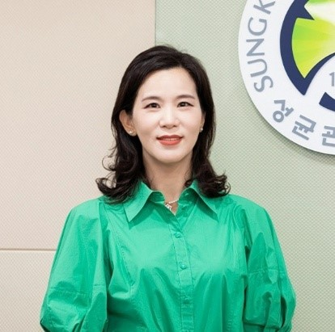
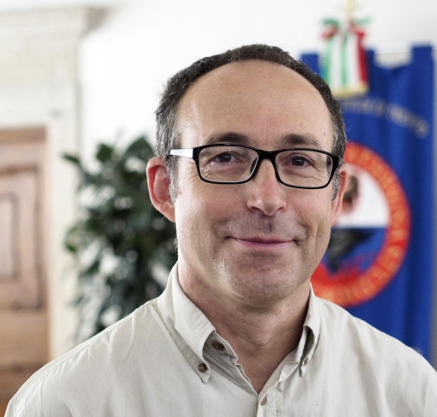

The 2026 Seoul International Conference on Linguistics
Theory Returns: Linguistics in the Age of AI


Conference Description
The Linguistic Society of Korea (LSK) is pleased to announce the 2026 Seoul International Conference on Linguistics (SICOL-2026), to be held on August 10–11, 2026 at Sungshin Women’s University, Seoul, Korea.
Recent advances in artificial intelligence, particularly large language models (LLMs), have transformed how language is processed, modeled, and analyzed. As AI systems increasingly simulate aspects of linguistic competence and performance, fundamental questions concerning the nature of linguistic knowledge, structure, and representation become ever more pressing.
In such a rapidly evolving intellectual landscape, theoretical linguistics assumes renewed importance. Sustained inquiry into the underlying architecture of the human language faculty—its formal properties, constraints, and explanatory principles—is indispensable for understanding both the limits and implications of AI-driven approaches to language.
SICOL-2026 aims to provide a forum for rigorous investigation of the essential properties of human language, encouraging contributions that engage foundational questions of linguistic theory, formal modeling, and empirical methodology in dialogue with contemporary developments in AI.
Invited Speakers

Jennifer Cole
Professor, Department of Linguistics, Northwestern University
Jennifer Cole is a Professor in the Department of Linguistics at Northwestern University. Her research focuses on the phonology and phonetics of prosody—the intonation and temporal patterns of spoken language—and how prosody encodes sentence structure, communicative intentions, and the dynamics of social interaction. She employs computational and statistical methods to model prosody in experimental and corpus data, with an emphasis on automated analysis of large, multi-talker datasets across diverse languages. She has pioneered the use of crowd-sourced perceptual ratings as a basis for building cross-linguistic models of prosody. Her current work includes collaborative projects on prosody in individuals with autism and neurological speech disorders, as well as the development of open, scalable, data-driven infrastructure for collaborative language science research. For more information, visit her homepage and the Prosody and Speech Dynamics Lab.
Talk: Continuity and the emergence of the discrete: Intonation and its meaning

Hanjung Lee (이한정)
Professor, Department of English Language and Literature, Sungkyunkwan University
Hanjung Lee (PhD 2001, Stanford University) is Professor of English Linguistics at Sungkyunkwan University. She previously held a research position at the University of North Carolina at Chapel Hill, USA and a faculty position as Assistant Professor of Linguistics at the University of Minnesota-Twin Cities, USA. Her research interests lie at the interface of grammar, semantics, and pragmatics, with a particular focus on how linguistic form shapes interpretation and patterns of language use. Her research combines theoretical modeling with experimental and corpus-based methods, and her work has appeared in leading journals including Language (2024), Journal of Linguistics (2022, 2016), Journal of Pragmatics (2013, 2007), Cognition (2007), and Natural Language and Linguistic Theory (2003).
She is also the author of the book Artificial Intelligence and Linguistic Imagination: A New Paradigm in Linguistic Research (2025, Sungkyunkwan University Press) and the forthcoming monograph Polysemy in Semantics with Contextualized Language Models: Distribution, Boundaries and Interpretation of Polysemous Senses (Topics in English Linguistics 124, De Gruyter Brill). In these works, she develops a large-scale, usage-based account of verbal polysemy and meaning construction using contextualized language models and experimental methods.
Her recent research has increasingly focused on developing empirically grounded models of meaning that integrate pragmatic theory with experimental design and computational approaches. Her forthcoming book Resonance Pragmatics: A Framework for the Affective and Social Impact of Human and AI Communicative Acts (Element in Pragmatics, Cambridge University Press) grows directly out of this line of work. It synthesizes her theoretical and experimental investigations into what she terms “resonance pragmatics,” offering a unified account of how communicative acts shape affective alignment, social norms, and collective meaning across both human and AI-mediated contexts
-based approaches to the study of semantic phenomena.
For more information, visit her homepage and the SKKU Language and Cognition Lab.

Hana Filip
Professor, Department of Linguistics III (Semantics and Pragmatics), Heinrich Heine Universität Düsseldorf
Hana Filip is a Professor of Semantics at Heinrich Heine Universität in Düsseldorf. Her research explores the conceptual foundations of semantics, integrating logical/formal and cognitive traditions. She specializes in aspect, genericity, the mass/count distinction, and the interaction between noun phrase semantics and verbal aspect. She received her Ph.D. in Linguistics from the University of California at Berkeley, and her dissertation, Aspect, Eventuality Types and Noun Phrase Semantics, was published in the Outstanding Dissertations in Linguistics series. Prior to her current role, she held faculty positions at Stanford University, Northwestern University, and the University of Rochester, and worked as a computational linguist at SRI International and ICSI at Berkeley. Her recent research, including the DFG-funded project on the "Individuation of Eventualities and Abstract Things," continues to advance the study of semantic interpretation across diverse languages such as English, German, and various Slavic languages. For more information, visit her homepage

Roberto Zamparelli
Professor, Center for Mind/Brain Sciences, University of Trento
Roberto Zamparelli is an Associate Professor at the Center for Mind/Brain Sciences (CIMeC), University of Trento.
A leading figure in formal semantics and the syntax of Noun Phrases (DPs), his recent research bridges the gap between theoretical linguistics and generative AI.
In his 2025 work, "Doing Linguistics in the GPT era," he explores how the linguistic competence of Large Language Models (LLMs) compares to human cognition, advocating for the use of "human-sized" training data (e.g., the BabyLM challenge) to probe the limits of data-driven approaches.
His current projects, including REPLAI (Repetition Experiments as Probes on Linguistics Analysis and Integration) and TREiL, investigate how computational models can identify multilingual political views and handle complex multimodal data.
By integrating classic formal analysis with modern LLM-based methodologies, his work offers a new paradigm for understanding language evolution, semantic shifts, and the cognitive foundations of grammar.
He holds a Ph.D. from the University of Rochester and is a frequent contributor to major journals in both theoretical and computational linguistics.
For more information, visit his homepage.
Program
Day 1 — Monday, August 10
| 09:00–09:10 | Opening |
| 09:10–10:10 | Invited Talk 1: Roberto Zamparelli |
| 10:10–10:20 | Coffee Break |
| 10:20–11:50 | Session 1 (parallel tracks A · B · C) |
| 11:50–13:20 | Lunch |
| 13:20–14:20 | Invited Talk 2: Hana Filip |
| 14:20–15:50 | Poster Session 1 |
| 15:50–17:20 | Session 2 (parallel tracks A · B · C) |
Invited Talk 1 · 09:10–10:10
- TBA
Session 1 · 10:20–11:50
Session 1A
Session 1B
Invited Talk 2 · 13:20–14:20
- TBA
Poster Session 1 · 14:20–15:50
Session 2 · 15:50–17:20
Session 2A
- 15:50–16:20 Predicting Aphasia Severity and Type Post-Stroke Using Structural MRI and Machine Learning
- 16:20–16:50 The Role of Attentional Mechanisms in Shaping Verbal and Nonverbal Communication in Boys with ASD
- 16:50–17:20 Eye-tracking Study of Emotional Text Processing in Turkic-Russian Bilinguals: Effects of Text Emotional Colouring and Participant’s Level of Alexithymia
Session 2B
- 15:50–16:20 Can LLMs Retrieve Variation? A Corpus-RAG Study of Native-Speaker Norm Drift in English as a Lingua Franca Dialogue
- 16:20–16:50 Negotiating East Asian Identities Through English: A Cross-Cultural Comparison of Japan, China, and Korea
- 16:50–17:20 Personae Through Sensory Evaluation in Taiwanese Coffee Discourse
Session 2C
- 15:50–16:20 Lexical and Semantic Evaluation of Whisper-Based Automatic Transcription of Korean Child-Directed Speech
- 16:20–16:50 Human-Speech Detection in Naturalistic Child-Centered Audio using an Interpretable Open-Source Ensemble Voice Activity Detection Approach
- 16:50–17:20AutoHPP: An automated system for head-turn preference procedure using a deep-learning-based infant head-turn classifier
Day 2 — Tuesday, August 11
| 09:00–10:00 | Invited Talk 3: Jennifer Cole |
| 10:00–10:10 | Coffee Break |
| 10:10–11:40 | Session 3 (parallel tracks A · B · C) |
| 11:40–13:10 | Lunch |
| 13:10–14:10 | Invited Talk 4: Hanjung Lee |
| 14:10–15:40 | Poster Session 2 |
| 15:40–17:10 | Session 4 (parallel tracks A · B · C) |
| 17:10–17:30 | Closing |
Invited Talk 3 · 09:00–10:00
Session 3 · 10:10–11:40
Session 3A
Session 3B
Session 3C
- 10:10–10:40 The Gradient Nature of Information Accessibility in English Noncanonical Word Order
- 10:40–11:10 Phrasal Dependency Features as Predictors of L2 Korean Written Proficiency: A Topic-Specific Regression Analysis
- 11:10–11:40 Processing Effort and Aesthetic Response in Second-Language Metaphor Comprehension
Invited Talk 4 · 13:10–14:10
Poster Session 2 · 14:10–15:40
Session 4 · 15:40–17:10
Session 4A
Session 4B
- 15:40–16:10 From Declarative to Mood: Semanticizing the Speech-Act Layer of Korean -ta
- 16:10–16:40 Semantic Field Construction and Metaphorical Patterning in Classical Chinese Poetry: Evidence from Tang Dynasty Female Poets
- 16:40–17:10 Semantic Divergence in Mandarin Passives: A Distinctive Colloexeme Analysis of Agentive and Agentless Bèi Constructions
Session 4C
- 15:40–16:10The Role of Input Quantity vs. Language Background in Word Learning among Korean Infants
- 16:10–16:40Shape Bias in Korean Noun Learning: Evidence from Property Ratings and Corpus Analysis in a Classifier Language
- 16:40–17:10The ManyBabies-AtHome Looking-While-Listening project: A remote cross-linguistic investigation of familiar word recognition in infants across various ages
Presenter Guidelines
- Abstract submission deadline: May 31, 2026 (AoE) (submission closed)
- Notification of acceptance: by June 20, 2026 (KST) (completed)
- Camera-ready abstract submission deadline: by July 5, 2026 (KST) (completed)
- Conference dates: August 10–11, 2026 (KST)
- 15-minute talk
- 5-minute discussion
Oral presenters are requested to keep strictly to the allotted time.
- Poster boards are 1800 mm (height) × 1000 mm (width). Please prepare your poster in portrait orientation and slightly smaller than the board size to ensure it fits.
- Poster presenters are expected to be present during the assigned poster session.
Registration
All participants are recommended to pre-register for this conference by July 31, 2026 (KST).
- On-site Registration: August 10–11, 2026
Registration Fees
- Faculty or PhD holders: KRW 50,000
- Students: KRW 30,000
The pre-registration process is as follows:
Step 1. Pay the registration fee
- International Attendees: Pay by cash in person at the registration desk during the conference.
* Please note that credit card payment is not available.
*Alternatively, international attendees may pay in advance via international bank transfer.
In this case, please email the conference organizers a confirmation of your transfer (e.g., a screenshot or receipt) so that your payment can be verified in advance.
- Domestic Attendees: Transfer to the following bank account
Nonghyup Bank (농협은행) 301-0367-5322-21* Specify your name and affiliation (e.g., 홍길동한국대). Transfer fees covered by the participant.
Account Holder: The Linguistic Society of Korea (예금주: 한국언어학회)
Step 2. Visit the following URL or scan the QR code to complete the Registration Form
Travel Info
Accommodation
Participants are responsible for arranging their own accommodation.
Suggestion: ARIRANG HILL Hotel Dongdaemun
Website:
https://www.hotelahill.com/en/
A special rate of KRW 130,000 per night is available during the conference period. To use this rate, please let us know by July 5 so that we can assist with your reservation.
Location & Transportation
ARIRANG HILL Hotel is a 1-minute walk from Seongshin Women's University Station (Subway Line 4 & Ui LRT Line). The station connects to the subway, airport buses, and city buses. Via Line 4 you can reach Seoul Station (for the Airport Railroad, AREX), Myeongdong, Dongdaemun, and major business areas such as Gwanghwamun, Euljiro, and Samseong Station.
Incheon Airport Limousine Bus
- Bus No. 6011 (Incheon Airport ~ Indeok University)
- Board at Incheon Airport Stop 5 or 11 → Get off at Sungshin Women's University Station
- Travel time: about 70 min | Interval: 20–30 min
- Fare: KRW 10,000 adult / KRW 8,000 child (general) — KRW 15,000 adult / KRW 8,000 child (luxury)
- Questions: +82-2-2664-9898
Gimpo Airport Limousine Bus
- Bus No. 6101 (Gimpo Airport ~ Surak Terminal)
- Board at Gimpo Airport Stop 5 → Get off at Gileum Station (Line 4) → transfer to Seongshin Women's University Station (taxi from Gileum ~5 min, approx. KRW 3,800)
- Travel time: about 50 min | Interval: 15–20 min
- Questions: +82-2-949-2313
Taxi
- From Incheon Int'l Airport: about 75 min, approx. KRW 60,000
- From Gimpo Int'l Airport: about 50 min, approx. KRW 30,000
- (Fares may vary according to traffic.)
Subway
- From Incheon Int'l Airport: Airport Railroad → transfer to Line 4 at Seoul Station → Sungshin Women's University Station (about 80 min, approx. KRW 4,300)
- From Gimpo Int'l Airport: Airport Railroad → transfer to Line 4 at Seoul Station → Sungshin Women's University Station (about 43 min, approx. KRW 1,650)
Visa
Participants who require a visa to enter the Republic of Korea are advised to check visa requirements well in advance of travel.
Upon request, the organizing committee may provide an official invitation letter for presenters.
Please note that the invitation letter is intended only to support visa applications and does not imply financial support from the conference organizers.
Getting to the Venue
Information on transportation to Sungshin Women’s University will be announced.
Contact & Committee
Contact
All inquiries regarding abstract submission and conference details should be directed to: sicol2026@gmail.com
Organizing Committee
- Tae-Jin Yoon — Sungshin Women's University (Chair)
- Ilhwan Kim — Sungshin Women's University
- Jieun Song — Korea Advanced Institute of Science and Technology
- Suwon Yoon — University of Seoul
- Hansaem Kim — Yonsei University
- Sanghoun Song — Korea University
- Sunwoo Park — Keimyung University
Program Committee
- Hayeun Jang — Sungkyunkwan University (Chair)
- Jieun Kim — University of Ulsan
- Jungsoo Kim — Incheon National University
- Sangah Lee — Seoul National University
- Sumi Han — Hallym University
- Kyungchul Chang — Pusan National University
- Jungmee Lee — Seoul National University
- Dongwoo Park — Korea National Open University
- Ji-eun Kim — Duksung Women's University